1上學期 第 6 章
恆定性
答案卡
點題號可跳到該題詳解。開啟「遮住答案」後，點一下塗卡格才會顯示答案。
詳解
尿酸是蛋白質經代謝後所產生的含氮廢物，痛風的病人應減少蛋白質的攝取，而海鮮富含蛋白質。
看題目
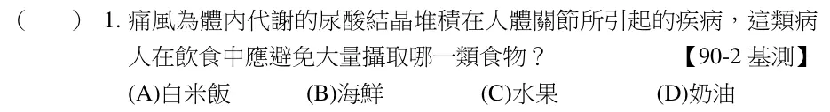
加入清水是採取排水集氣的方式，來測定萌芽綠豆所產生的氣體為何。
看題目
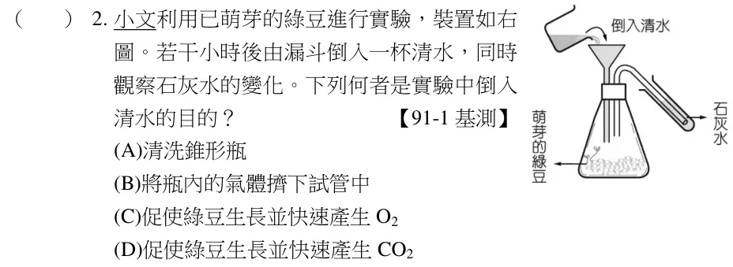
(A)甲是腎上腺，位於腎臟的上方，可分泌腎上腺素；(B)乙是腎臟，血液中的尿素、多餘的鹽類和水分，在腎臟形成尿液；
(C)丙是輸尿管，負責將腎臟形成的尿液注入膀胱；(D)丁是膀胱，是儲存尿液的器官，當膀胱內的尿液達到一定量時，便可引起尿液而經尿道排出體外。
看題目
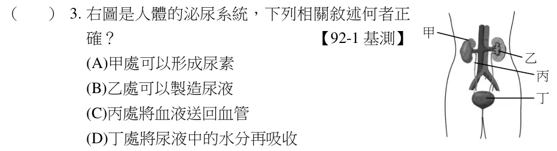
用餐後，血糖濃度會上升，胰島素的分泌會促使血糖轉變為肝糖，並加速血糖被細胞利用，使血糖濃度降低，故胰島素在丙階段開始作用。
看題目
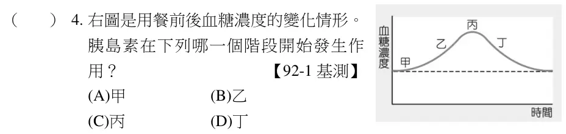
吸氣時，肋骨上舉、橫膈收縮而下降，所以胸腔會擴大；呼氣時，肋骨下降、橫膈舒張而上升，胸腔會縮小。
看題目
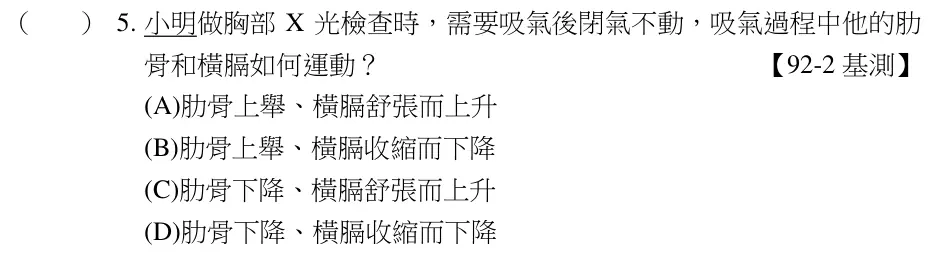
綠豆萌芽時所產生的氣體為二氧化碳。
看題目
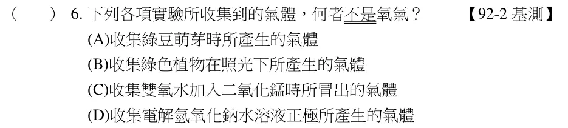
在清晨或夜晚，植物的氣孔關閉，蒸散作用速率降低，根部卻持續吸收水分，造成植物體內水分由葉緣或尖端泌出，稱為泌液作用。
看題目
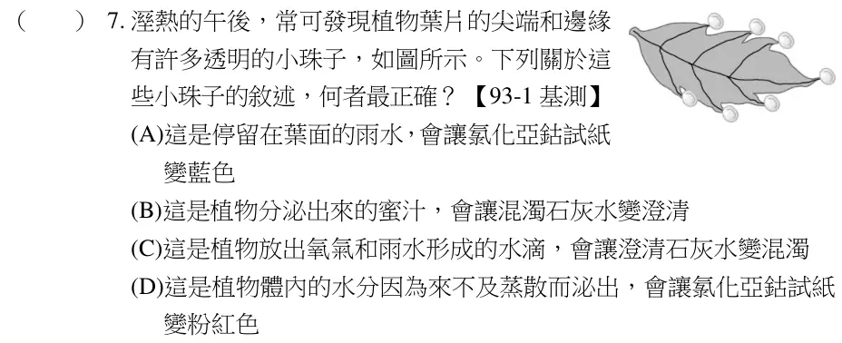
所有生物的呼吸作用皆是吸入氧氣，呼出二氧化碳，行呼吸作用的目的是為產生能量，供細胞代謝之用。
看題目
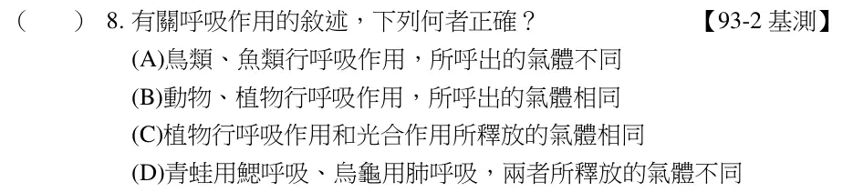
甲為胰島素，乙為升糖素。
看題目
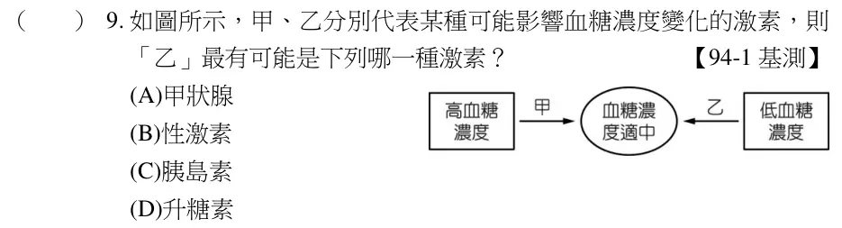
水分經由食物的攝入量低於尿液的排出量。
看題目
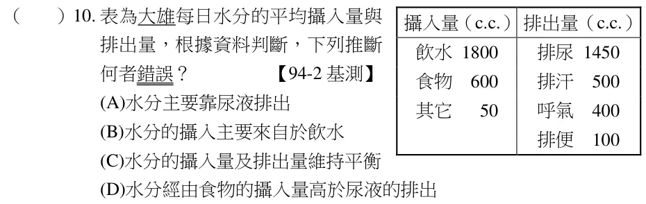
腎臟具排泄功用，無法儲存尿液，尿液經輸尿管送至膀胱儲存。
看題目
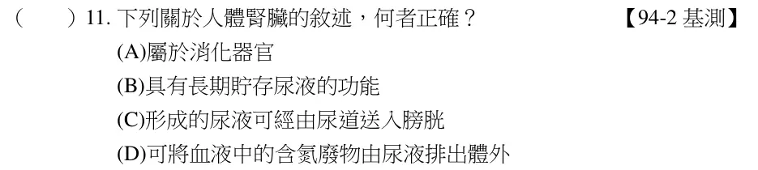
在呼氣時，肋骨會先下降，同時橫膈上升，胸腔及肺臟隨之變小，使內部壓力變大，進而氣體排出。
看題目
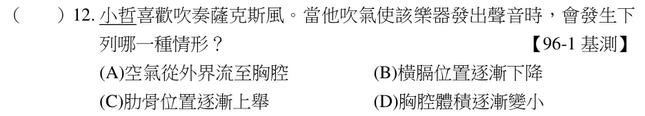
呼吸運動的控制中樞在腦幹，當血液中的二氧化碳濃度增加，腦幹會促使呼吸運動加快，以排除過多的二氧化碳。故答案為(B)。
看題目
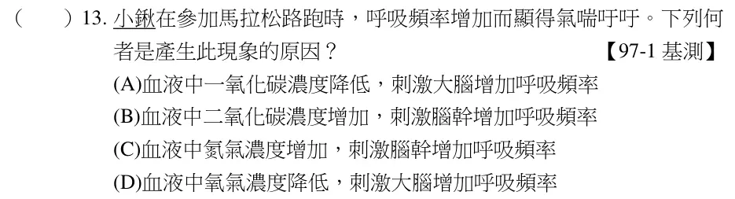
(A)腎臟位於泌尿系統中，可排泄廢物；(B)肝臟位於消化系統中，可製造膽汁；(D)子宮於生殖系統中，可作為受精卵著床發育處。故答案為(C)。
看題目
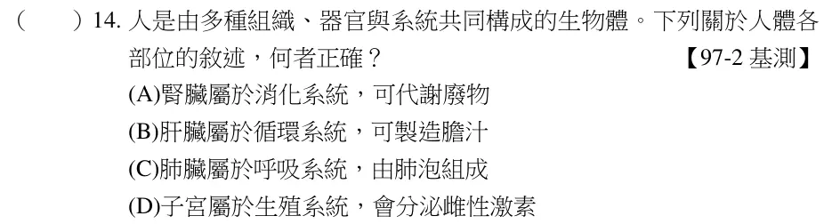
打噴嚏「哈……啾」，當「啾」的口形產生時，正處於呼氣狀態，應是肋骨下降，橫膈上升，肺部體積縮小。故答案為(A)。
看題目
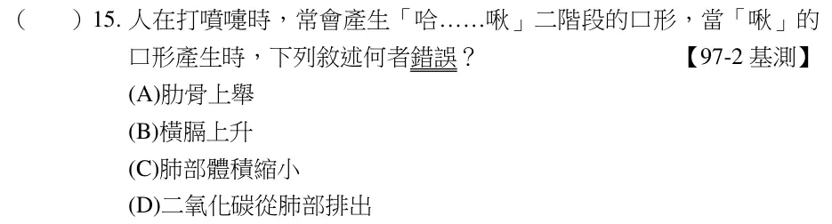
(A)哺乳動物在肝臟中將氨代謝為尿素；(B)毒性：氨＞尿素；
(C)蛋白質代謝會產生含氮廢物；(D)含氮廢物主要是經由泌尿系統排出。故答案為(A)。
看題目
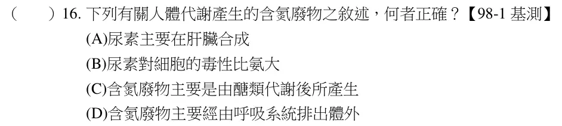
人為內溫動物，正常狀態下，體溫不受外界環境氣溫變化的影響而改變。
看題目
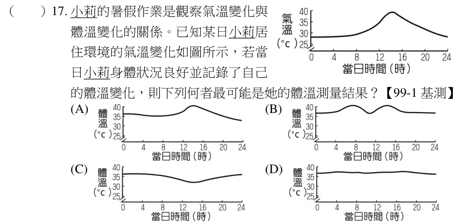
空腹8 小時後血糖濃度低，喝下高濃度的葡萄糖液後，血糖濃度會先升高，再藉由激素調節而後降，達到穩定。
看題目
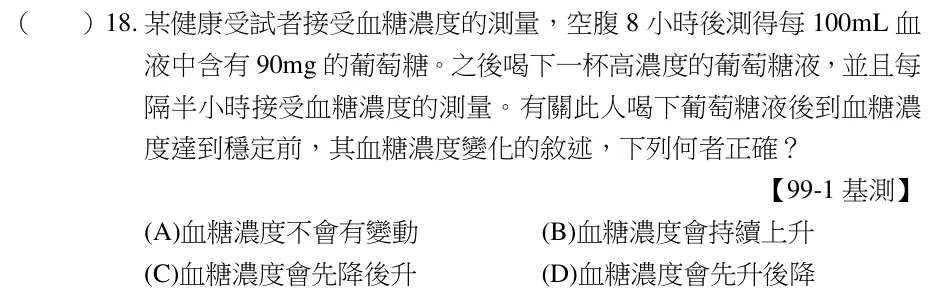
甲為肝臟，有血糖庫之稱；乙為小腸，可消化分解與吸收血糖；丙為胃，初步分解蛋白質；丁為胰臟，可維持血糖恆定。故選(C)。
看題目
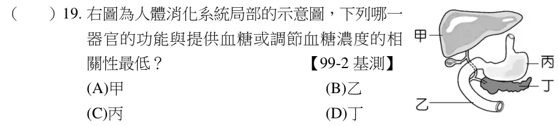
看題組文章
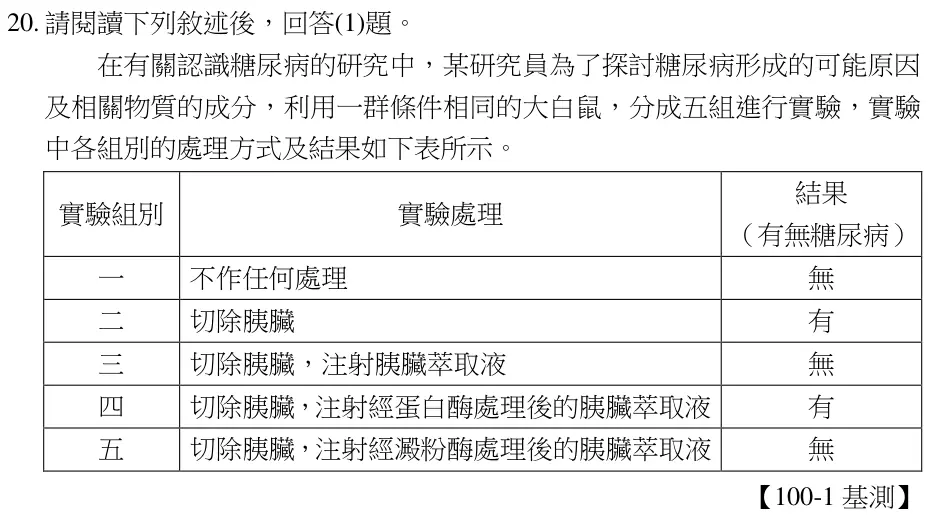
產生糖尿病的原因是因為血糖持續偏高，故可推測切除胰臟的大白鼠已經無法分泌降低血糖物質。故選(D)。
看題目
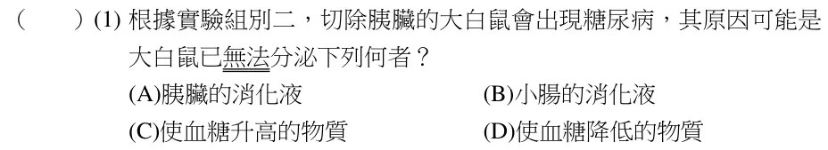
(A)呼氣時會失去水分；(C)以尿液形式失去的水分較糞便多；
(D)溫度較高，排汗量較高而排尿量較低；溫度較低則相反；故當氣溫下降為7～11℃，以汗液形式失去的水分應減少。故選(B)。
看題目
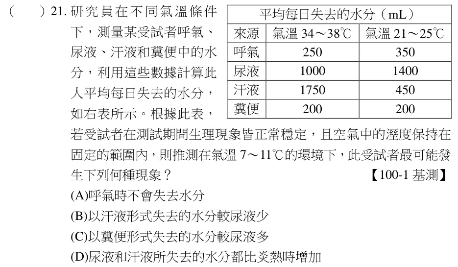
在溫度過低時，會表現出體表血管收縮，食慾增加及肌肉顫抖等現象，並不會表現出冒汗的現象。故選(C)。
看題目
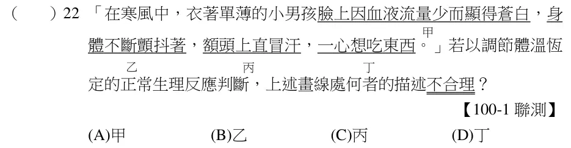
如圖所示，小華在不同狀態時，呼吸頻率為甲＜乙，故在乙狀態時CO2 較多。故選(D)。
看題目
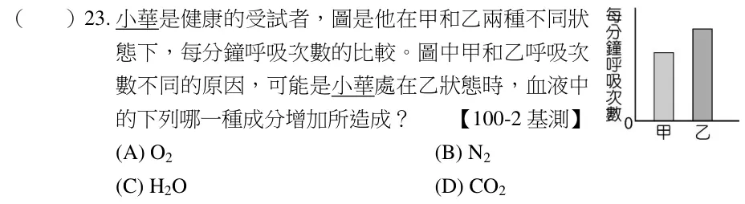
看題組文章
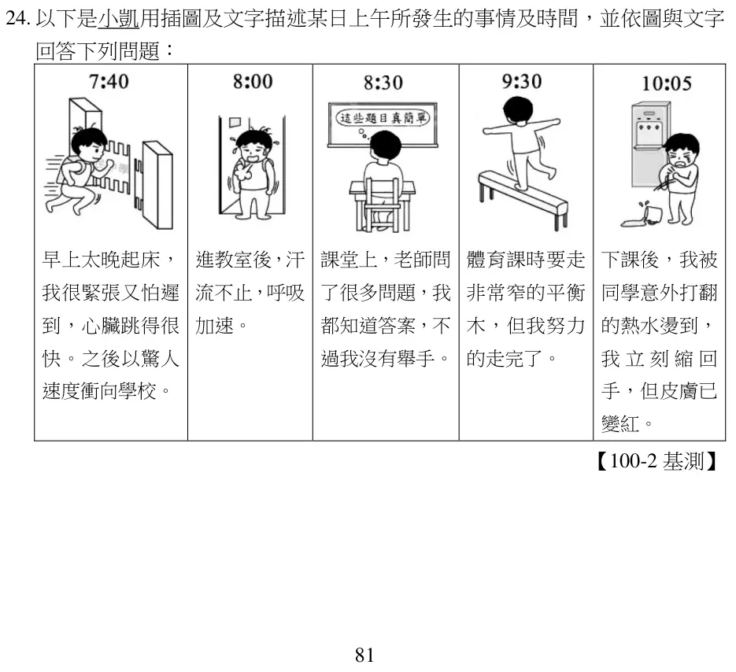
甲為小腦，掌管全身肌肉協調平衡。故選(C)。
看題目
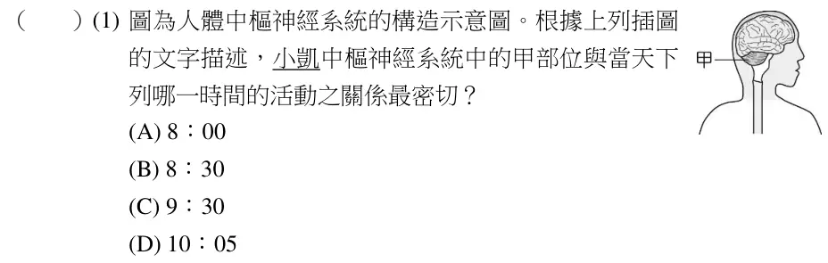
小凱在7：40 的反應顯示為分泌腎上腺素。故選(C)。
看題目
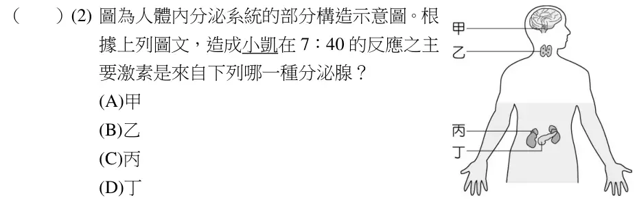
在喝下高濃度的葡萄糖液後，經由消化系統吸收，血液中的葡萄糖濃度會上升，之後胰島素的分泌量會上升，使葡萄糖進入肝臟，形成肝糖儲存。故選(D)。
看題目
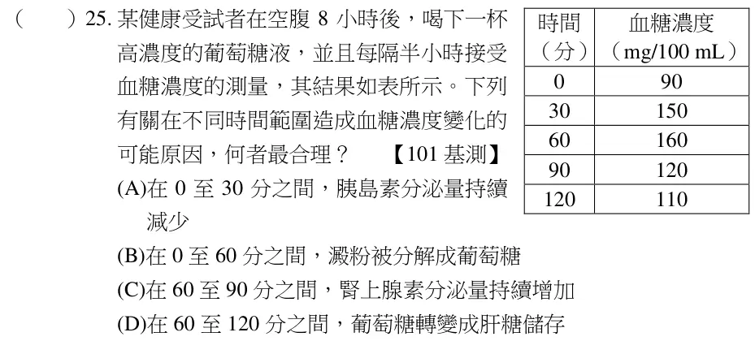
吸氣時橫膈膜下降，胸腔擴大，肺部體積也隨之擴大，空氣進入肺部；呼氣時橫膈膜上升，胸腔縮小，肺部體積也隨之縮小，空氣由肺部排出。故選(B)。
看題目
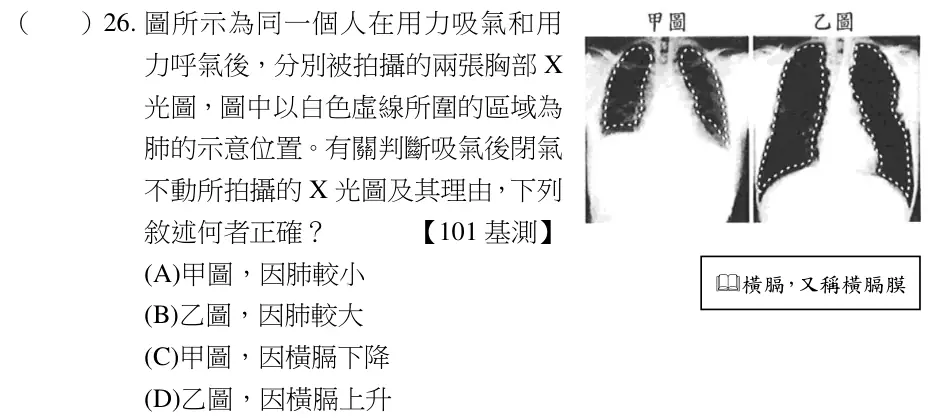
血液中二氧化碳的濃度增高，會刺激腦幹以加速呼吸運動。故選(D)。
看題目
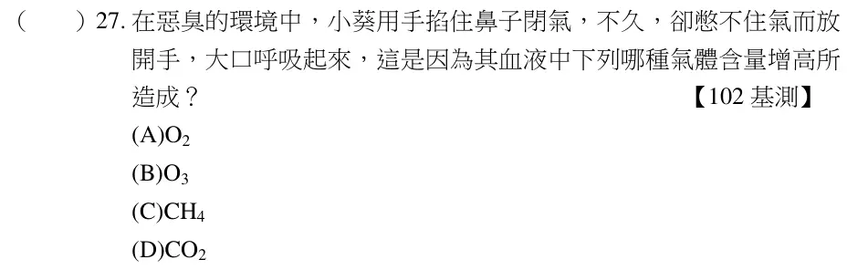
呼氣時橫膈位置會上升，藍色氯化亞鈷試紙可檢測的物質為水。故選(C)。
看題目
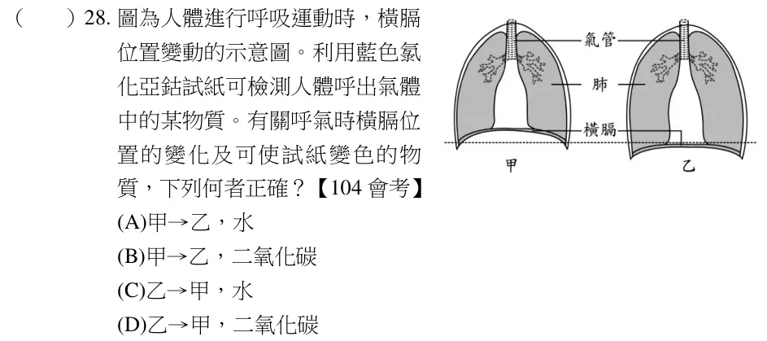
具有葉綠體的原生生物為藻類，藻類可進行光合作用和呼吸作用。故選(C)。
看題目
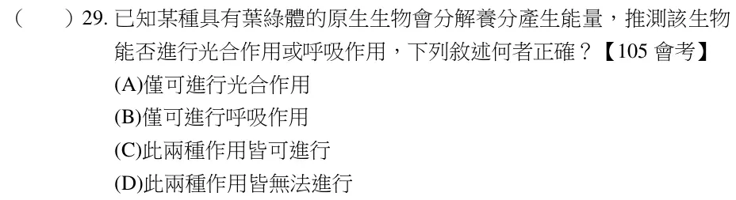
由圖可知某動物的體溫會隨環境溫度改變而改變，故某動物為外溫動物。外溫動物主要是從外界環境吸收熱量以維持體溫。故選(B)。
看題目
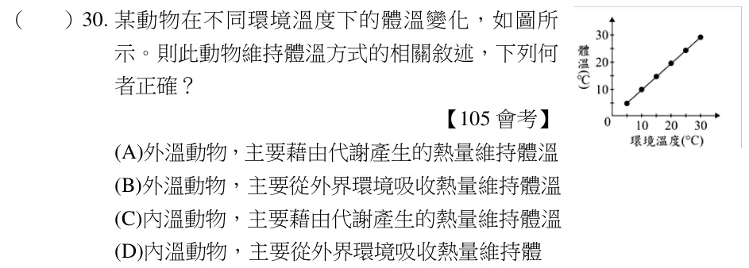
由表可推論甲細胞可行呼吸作用，不能行光合作用；乙細胞可行呼吸作用，也可行光合作用。呼吸作用在粒線體進行，光合作用在葉綠體進行。故選(D)。
看題目
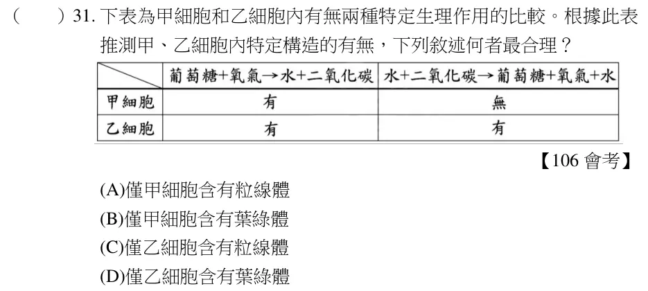
由圖可知甲為肝靜脈，乙為肝動脈，人在肝臟中將氨代謝為尿素， 故尿素濃度甲＞乙；丙為腎靜脈，丁為腎動脈，腎臟將血液中的尿素過濾，故尿素濃度丙＜丁。故選(C)。
看題目
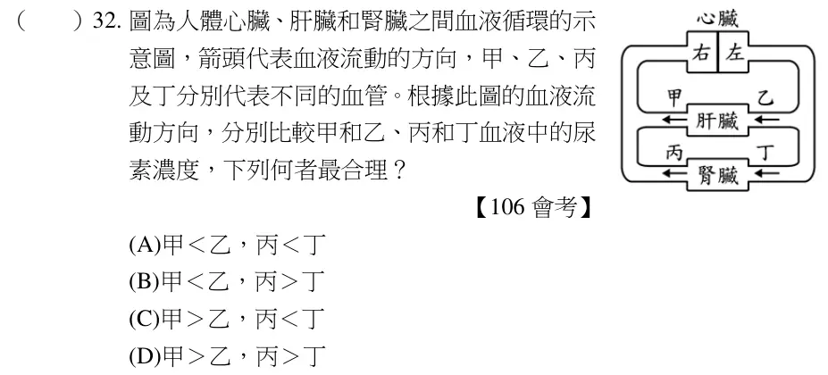
魚類：外溫動物，兩生類：外溫動物，哺乳類：內溫動物，爬蟲類：外溫動物。故選(C)。
看題目
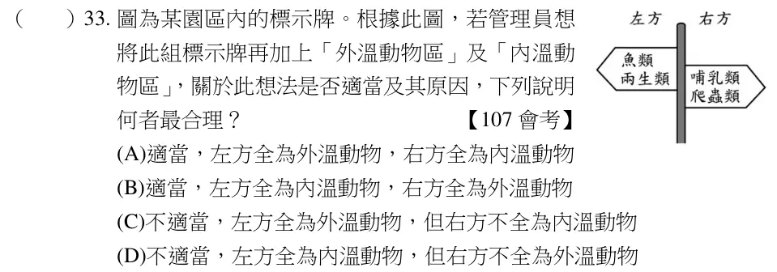
當氣體由肺泡往支氣管、氣管移動時，進行的為呼氣動作，此時應肋骨下降、橫膈上升、胸腔變小、肺漸變小。故選(B)。
看題目
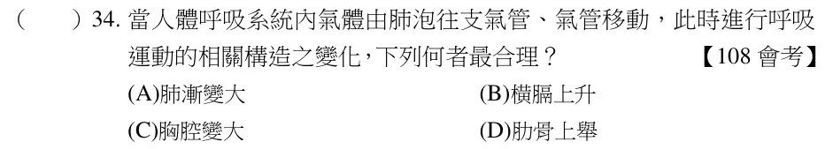
根據題目敘述的條件，零食開始熔化的溫度必須高於33℃，但必須比人體正常體溫(36℃~37℃)低，即33℃<正常開始熔化溫度<36℃~37℃，只有品牌丙符合。故選【C】。
看題目
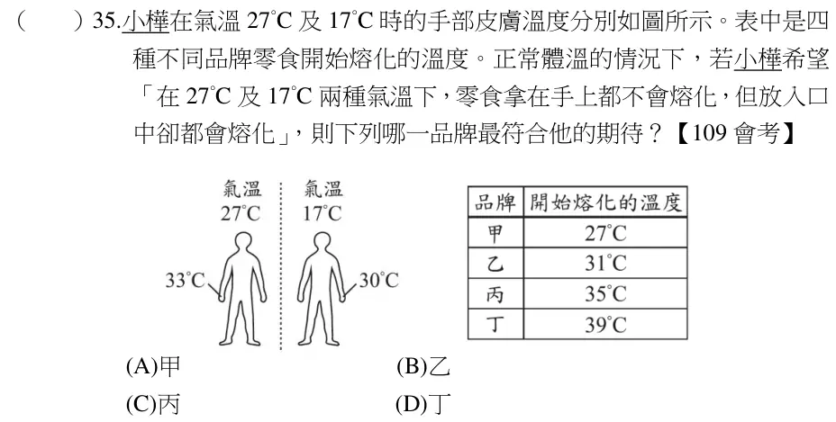
人體中的蛋白質代謝後會產生含氮廢物，運送到肝臟轉換成尿素。故選【D】。
看題目
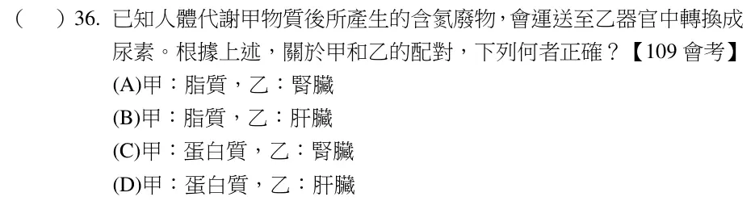
當人體處在溫度較體溫高的環境中時，皮膚表面的血管會擴張，流到皮膚表面的血液量會增加以利散熱；當處在溫度較體溫低的環境中時，肌肉會顫抖以增加體熱的生成。由此可知甲環境溫度較體溫低，乙環境溫度較體溫高。故選【D】。
看題目
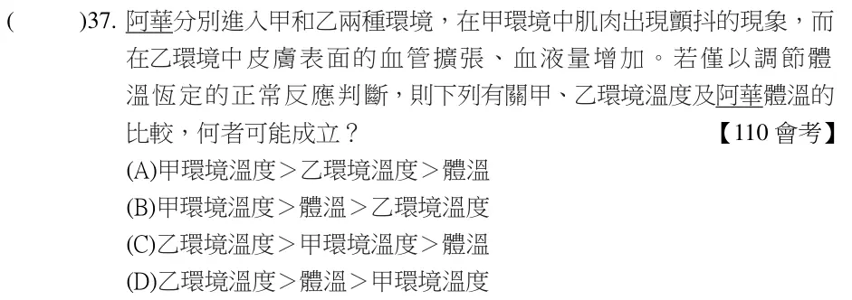
人體中所有器官的細胞皆會消耗氧氣，而肝臟會將血液中的氨轉變為尿素，使得血液中的尿素濃度上升。故選【B】。
看題目
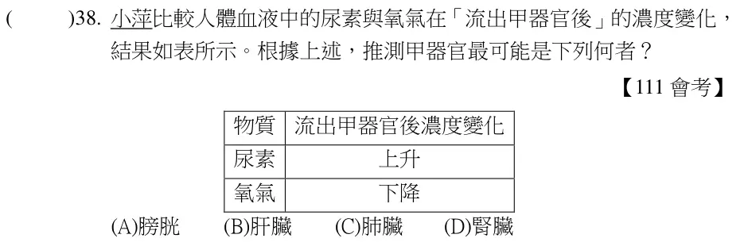
由圖可以看出小杉第6～7 天時，體溫超過恆定範圍，因此第6天為發病時間，而微生物X 潛伏期為1～3 天，可能在第3～5天感染。故選【B】。
看題目
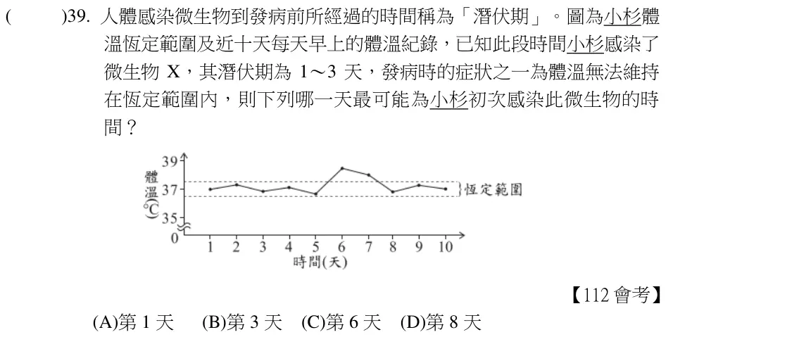
由題意可知，乙血管中的含氧量大於甲血管，所以乙是腎動脈，甲是腎靜脈，丙是腎臟，腎臟為製造尿液的器官。故選(D)。
看題目
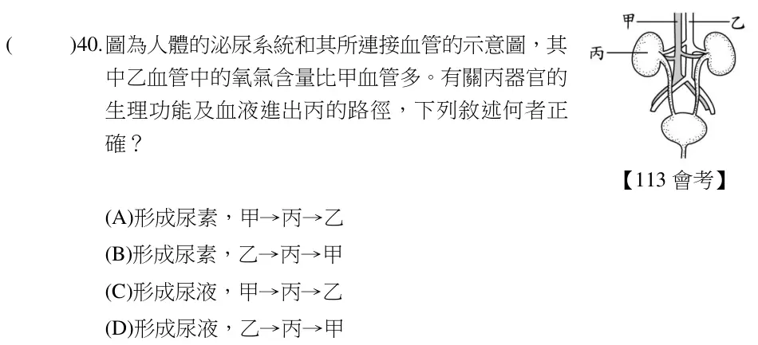
題目明確講出是進食後的血糖濃度圖案，故和餓肚子才會形成的升糖素應該沒有明顯的關聯，(A)(C)選項和題幹宗旨不符。由圖案得知甲乙進食後血糖濃度提升，甲血糖濃度提升得較乙早，也降低得早，(D)不符合此敘述。故選【B】。
看題目
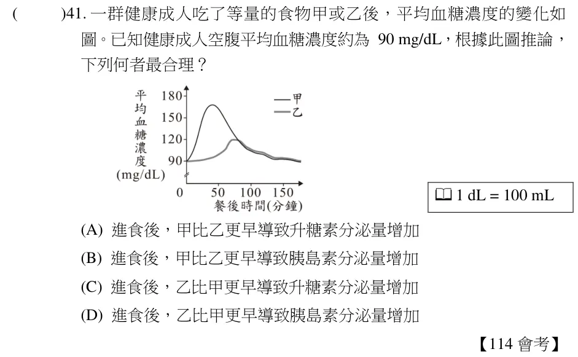